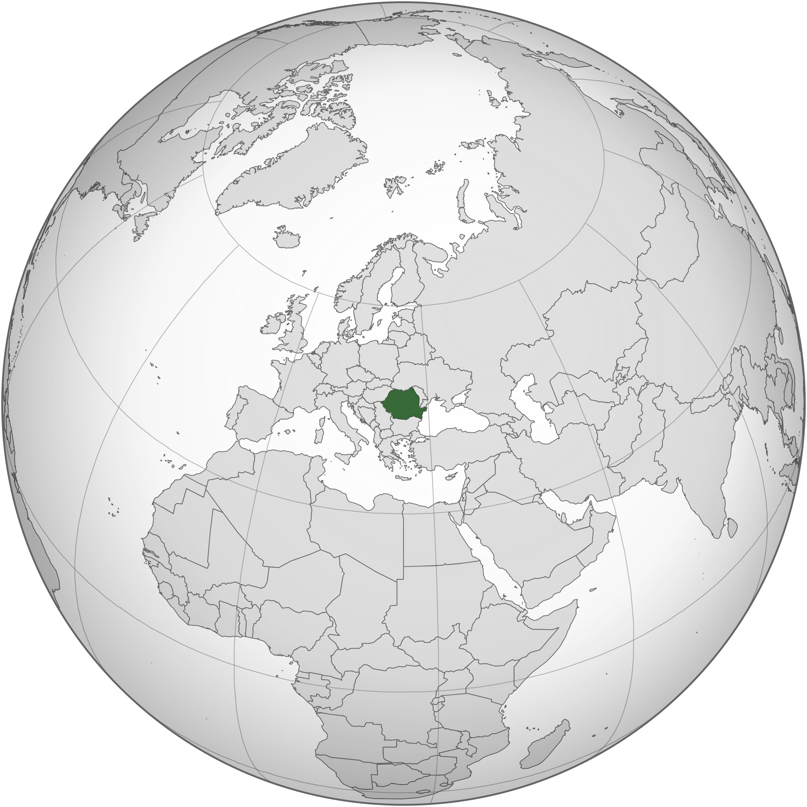

Prezentare Istorica
Context
Principatele Tarii Romanesti si Moldovei - timp de secole sub controlul Imperiului Otoman Turc - si-au asigurat autonomia prin Tratatul de la Paris din 1856. Au fost legate de facto in 1859 si unite oficial in 1862 sub noua denumire de Romania. Tara s-a alaturat Puterilor Antantei in Primul Razboi Mondial si, ulterior, a dobandit noi teritorii - mai ales Transilvania - care si-au dublat dimensiunea. In 1940, Romania s-a aliat cu puterile Axei si a participat la invazia germana a URSS din 1941. Trei ani mai tarziu, depasita de sovietici, Romania a semnat un armistitiu. Ocupatia sovietica de dupa razboi a dus la formarea unei "republici populare" comuniste in 1947 si la abdicarea regelui. Guvernarea de zeci de ani a dictatorului Nicolae Ceausescu, care a preluat puterea in 1965, si statul sau politienesc, condus de Securitate, au devenit din ce in ce mai opresive si draconice prin anii 1980. Ceausescu a fost rasturnat si executat la sfarsitul anului 1989. Fostii comunisti au dominat guvernul pana in 1996 cand au fost scosi de la putere. Romania a aderat la NATO in 2004 si la UE in 2007.
Prezentare Geografica
Localizare
Sud-estul Europei. Se invecineaza la nord cu Ucraina, la est cu Republica Moldova si Marea Neagra, la sud cu Bulgaria, iar la vest cu Serbia si Ungaria.
Pozitionarea Romaniei pe Glob:
Coordonate geografice
46° 00' N
25° 00' E
Suprafata
totala: 238,391 km²
teren: 229,891 km²
apa: 8,500 km²
Revendicari maritime
ape teritoriale: 12 nm
zona contigua: 24 nm
zona economica exclusiva: 200 nm
platforma continentala: pana la 200 m sub nivelul mării
Clima
temperata; ierni reci si innorate cu zapada si ceata frecventa; veri insorite cu ploi si furtuni frecvente
Teren
Campia Transilvaniei este separata de Podisul Moldovei la est prin Carpatii Orientali si de Campia Romana la sud prin Carpatii Meridionali (Alpii Transilvaniei).
Puncte de extrem
nord: Horodistea, Botosani
sud: Zimnicea, Teleorman
vest: Beba Veche, Timis
est: Sulina, Tulcea
cel mai jos punct: Marea Neagra, 0 m
cel mai inalt punct: Varful Moldoveanu, Muntii Fagaras, 2,544 m
Resurse naturale
petrol (rezerve in scadere), lemn, gaze naturale, carbune, minereu de fier, sare, teren arabil, energie hidraulica
Suprafata agricola
teren agricol: 60.7%
teren arabil: 39.1%
culturi permanente: 1.9%
pajisti permanente: 19.7%
padure: 28.7%
alte suprafete: 10.6%
Distributia populatiei
urbanizarea nu este particular de inalta, iar distributia populatiei este destul de uniforma in cea mai mare parte a tarii, cu zone urbane care atrag populatii mai mari si mai dense; maghiarii, cea mai mare minoritate a tarii, au o prezenta deosebit de puternica in Transilvania de est
Dezastre naturale
cutremure, cele mai severe in sud si sud-vest; structura geologica si climatul favorizeaza alunecarile de teren
Nota
controleaza cea mai usor de traversat ruta terestra intre Balcani, Moldova si Ucraina; Muntii Carpati domina centrul tarii, in timp ce Dunarea formeaza o mare parte din granita sudica cu Serbia si Bulgaria